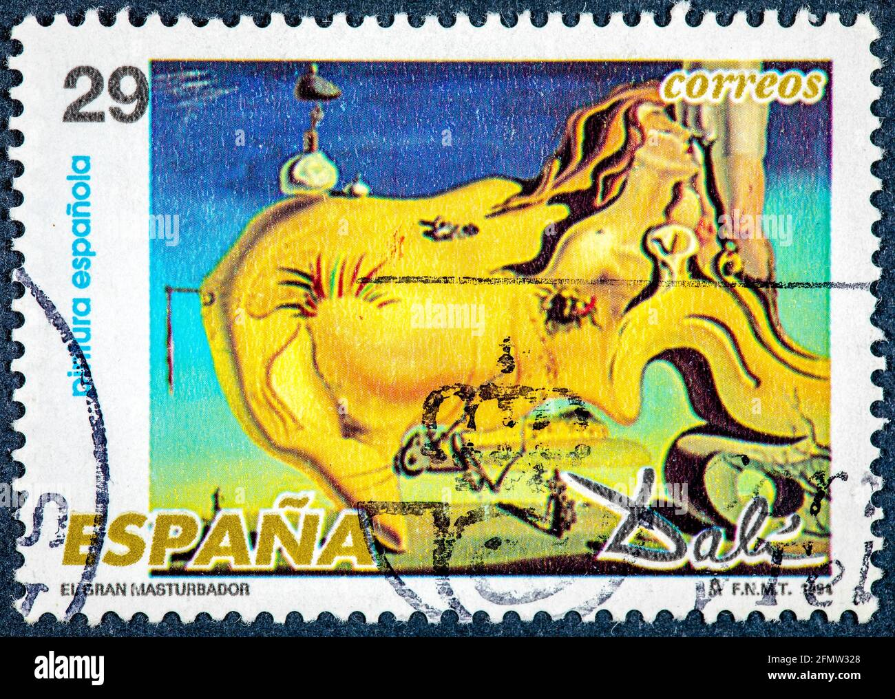
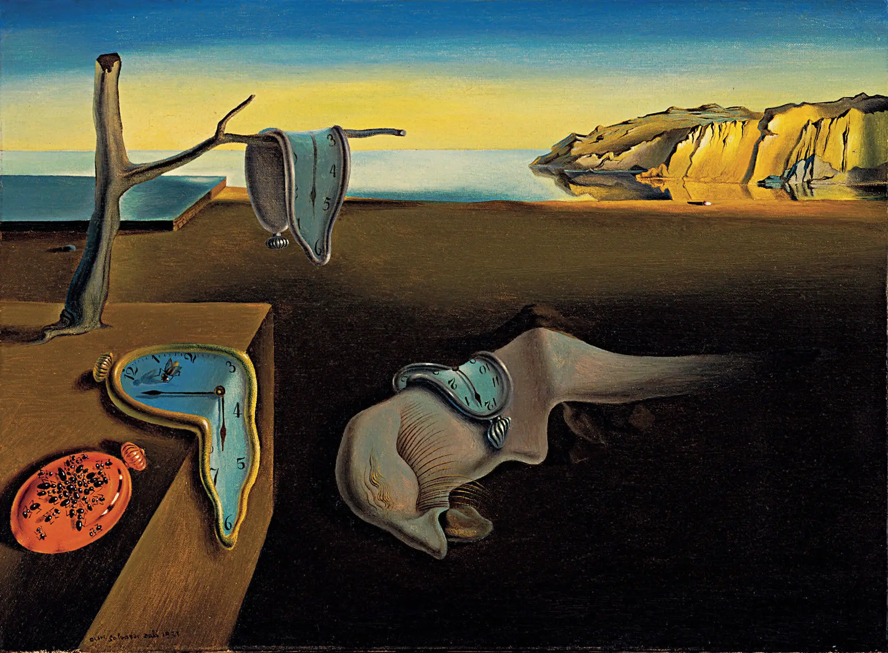
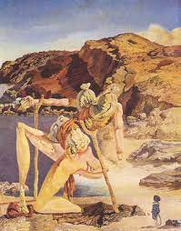
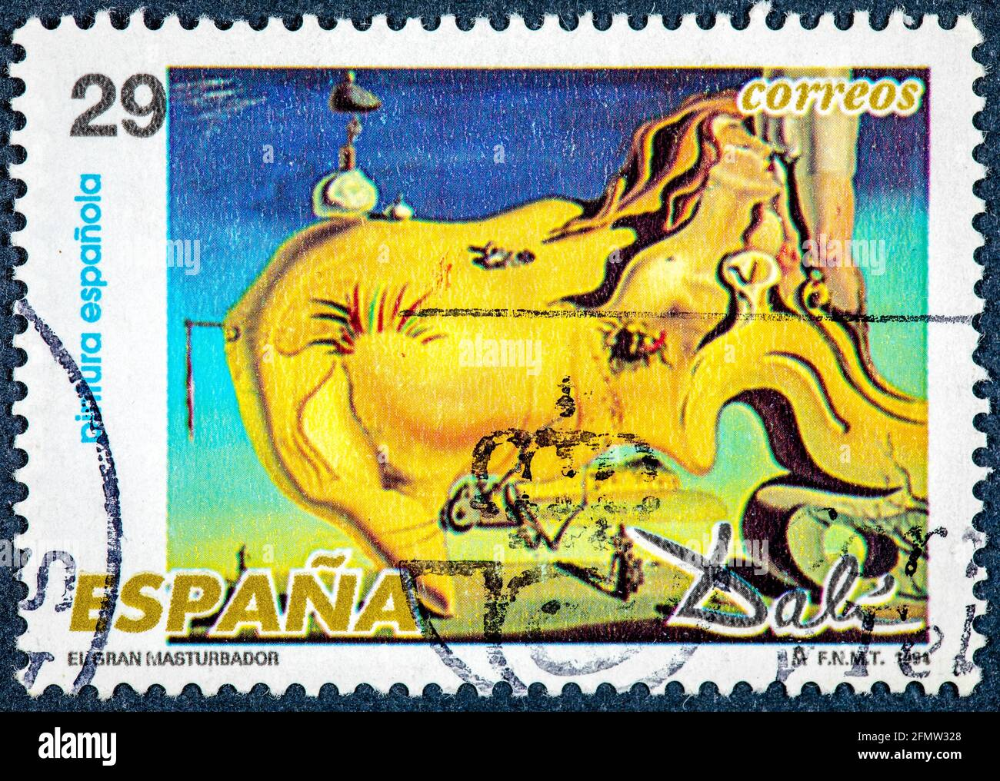
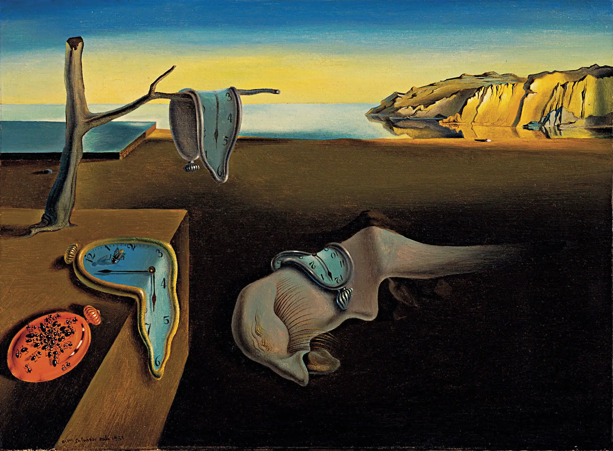
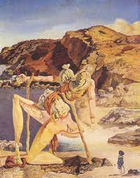
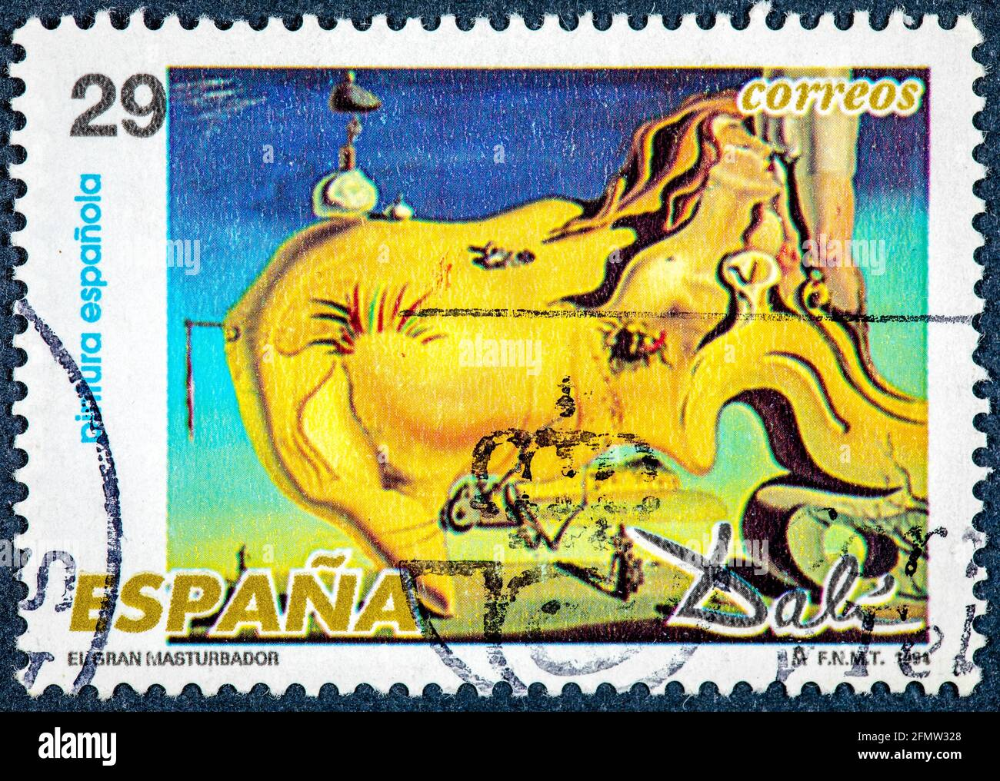
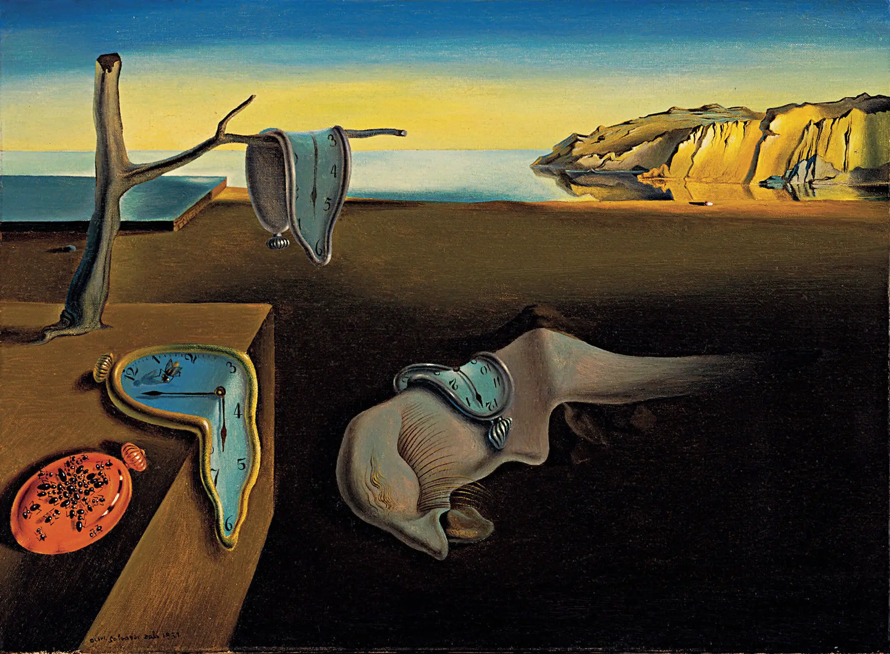
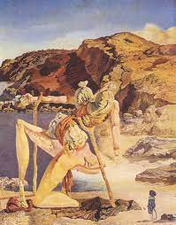
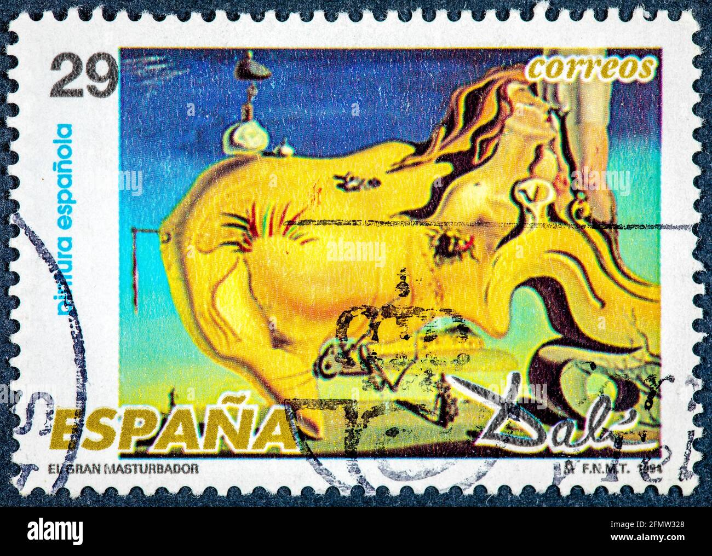
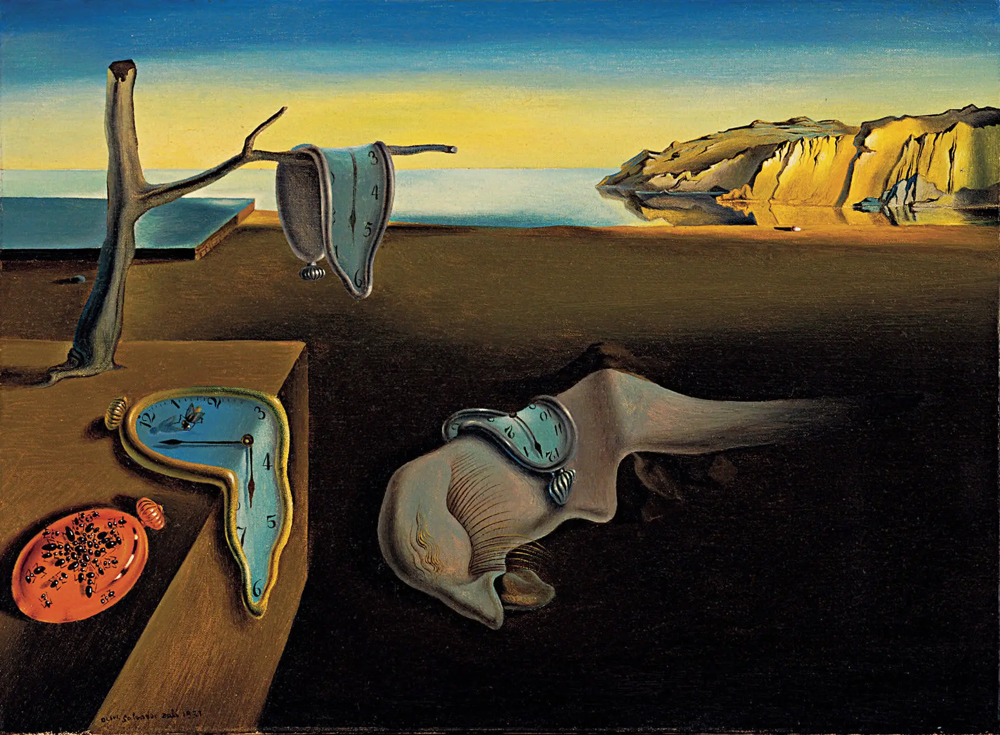
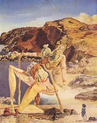
Salvador Dalí, il maestro surrealista del XX secolo, è noto per le sue straordinarie e bizzarre creazioni che sfidano la logica e la realtà. Nato in Spagna nel 1904, Dalí ha sviluppato uno stile unico caratterizzato da immagini oniriche, orologi molli e paesaggi surreali. La sua abilità nel dipingere dettagli iperrealistici si mescolava con una fervida immaginazione, creando opere che esploravano i recessi più profondi dell'inconscio umano. Tra i suoi lavori più celebri ci sono "La persistenza della memoria" e "La tentazione di Sant'Antonio". Dalí non solo ha influenzato l'arte, ma ha anche lasciato un'impronta indelebile nel mondo della moda, del cinema e della cultura popolare, incarnando l'essenza del surrealismo con il suo carattere eccentrico e visionario.
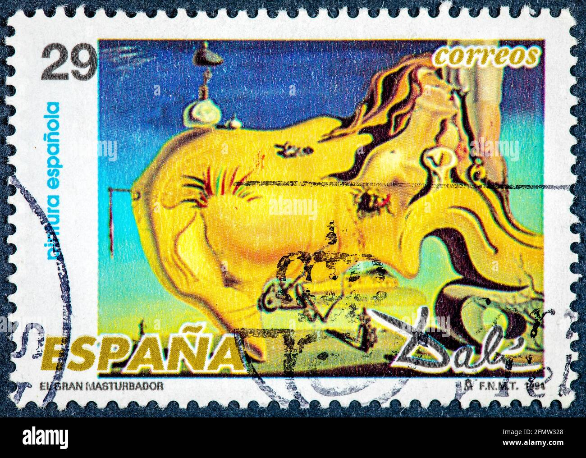
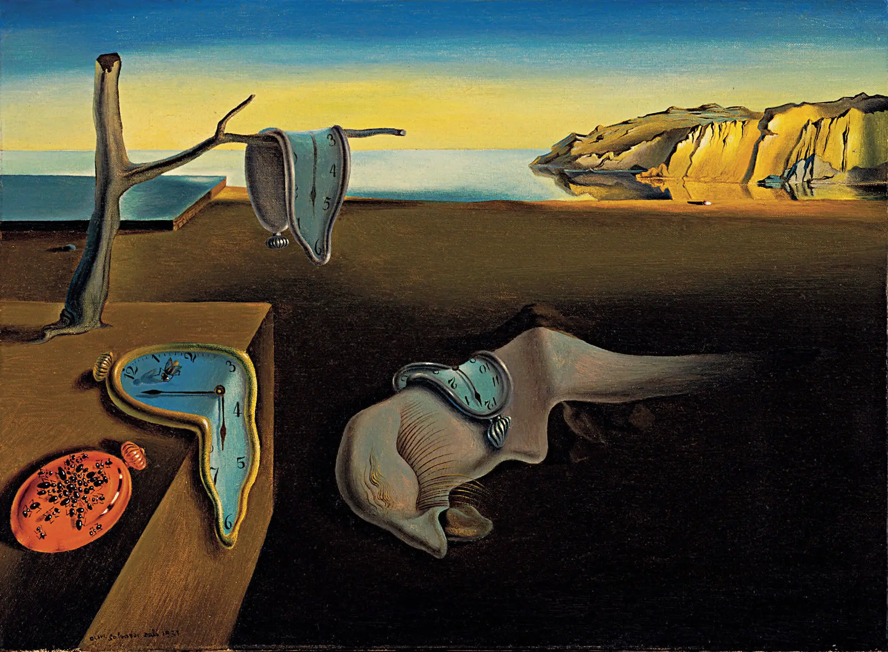
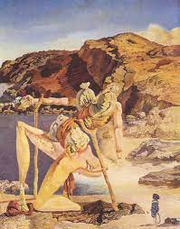